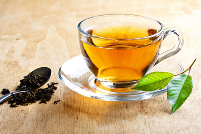

В любой непонятной ситуации пей чай!
КТО МЫ?
Добро пожаловать в клуб ценителей настоящего Английского чая! У нас вы можете обсудить любые темы относительно чая, попросить советов, поделиться своими рецептами приготовления, ну и конечно же приобрести чай напрямую из Великобритании.Свежесть и качество
Профессиональная упаковка
Точная дата производства

Английская чайная традиция По традиции заваренный английский чай не принято разбавлять кипятком, а если его пьют с молоком, то сначала в чашку наливают молоко, а затем чай. Английский чай готовят, исходя из пропорции 1 ч. л. на 1 чашку чая и еще одна – сверху общего количества чашек, т.е. на 5 человек в чайник нужно положить 6 ч. л. сухой заварки. Напиток настаивают 3-5 минут и разливают по чашкам, после чего в чайник снова доливают кипяток, и накрывают его тканевым чехлом, который дольше сохранит тепло.